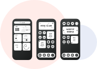

- Work
- About
- Contact
- Resume

Hello, my name is Natalie and I am passionate about finding creative solutions that improve digital experiences for everyone. To me design is a world of opportunity to be creative and learn new things everyday.
I’ve always had a passion for the arts and practiced traditional forms for as long as I can remember. I began to take an interest in digital mediums in the beginning of my college career, particularly film and graphic design. I took film classes at Austin Community College, where I became fascinated by the art of visual storytelling, and I spent my weekends and time off learning the graphic design industry standard softwares.

I recently graduated from the University of Texas at Austin, where I studied Middle Eastern languages and cultures. For my senior year capstone project I composed my very first graphic design portfolio, a campaign about drug addiction and mental health in the Middle East. Ever since, my goal in life was to find a way to use creativity to help others.
I discovered UX/ UI shortly after my graduation and the rest is history. I became fascinated by the research and problem-solving aspects of this multi-dimensional field, and how design decisions are centered on the user. In visual storytelling, you have something called the dramatic center, which is the driving force of the story. In UX/ UI, the user is the dramatic center and I design with this mantra in mind.

After dabbing in InVision and several Youtube tutorials, I joined the University of Texas UX/ UI Bootcamp, where I learned about design processes and concepts and applied them to real world situations. I enjoy working on every stage of this iterative process, from UX research to front-end development.